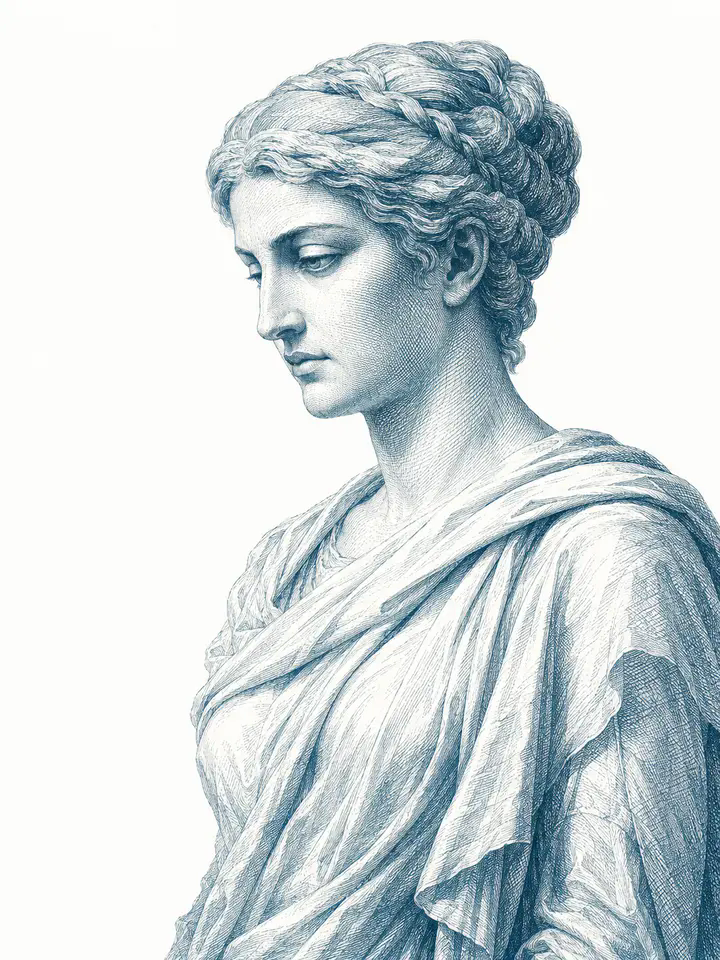

13
丢番图（Diophantus）《算术》（Arithmetica）评注
古代目录传统把对这部十三卷数学著作的评注归于希帕蒂娅。她很可能以解释、整理与教学为目标，使复杂题解更便于后人使用。
边界：原作散佚，无法逐段区分她与后世抄写者的贡献。
序章 · 从死亡退回生命
希帕蒂娅（Hypatia）被塑造成科学的殉道者、古典宗教的圣徒、启蒙运动的武器、 女性主义的先驱，甚至一位差点发现日心说的现代科学家。每一层形象都回应了 后世真实的需要，却也可能把她本人遮得更深。
去定义她，远不如去接近她重要。
本网站依照视频文稿的核心判断展开：比起哲学家或科学家的现代头衔， 希帕蒂娅首先是一位杰出的教师。她的课堂跨越宗教身份；她的学生网络延伸至 帝国官僚与基督教主教；她又以哲学家的道德责任进入城市公共生活。 正是这种教育与公共声望，使她在 412—415 年的权力斗争中成为一个危险的象征。

阅读地图
亚历山大里亚（Alexandria） · 从王室新都到晚期古代都会
希帕蒂娅的故事不是在一座抽象的“文明之城”里发生的。她生活的亚历山大里亚， 已经走过七百多年：它曾由王权集中制造知识，也在战争、财政变化、自然灾害与宗教竞争中不断重组。

亚历山大大帝（Alexander the Great）在埃及海岸选定城址，真正的大规模建设由继承埃及的 托勒密王朝（Ptolemaic dynasty）完成。规则街道、双港、连接法罗斯岛的堤道与面向尼罗河的水路， 让它同时成为王都、粮食出口港和跨地中海商业节点。希腊语精英、埃及居民、犹太社群和来自各地的商旅 在同一城市生活，却并不因此拥有同等身份或相同记忆。
缪斯宫（Mouseion）与亚历山大图书馆（Library of Alexandria）依靠王室财政、馆员职位、 文本征集和抄写体系运转。欧几里得（Euclid）、埃拉托色尼（Eratosthenes）等学者使城市成为 数学、天文学、地理学和文献校勘中心。这里的“知识奇迹”不是一栋楼自动产生的，而是钱、职位、纸草、 港口和跨区域人才共同维持的基础设施。
也正因如此，衰落不可能只有一个纵火者。前 145 年左右托勒密八世（Ptolemy VIII）驱逐部分学者， 前 48 年凯撒战争中的港区大火造成损失；罗马统治下的资助与成员制度继续变化，3 世纪的战争又破坏王宫区。 到希帕蒂娅出生时，托勒密时代的主图书馆早已不是全盛形态。
亚历山大选址；其继承者把城市建成托勒密埃及的王都与港口。
王室以薪俸、食宿、免税与抄写制度支持学者共同体，形成城市的知识黄金时代。
王位冲突中的驱逐迫使部分学者离城，亚历山大传统向罗得岛等地扩散，也开始失去集中优势。
火灾造成书卷损失，但此后仍有缪斯宫活动的记录，不能写成图书馆在一夜间彻底消失。
帕尔米拉战争与奥勒良反攻重创旧王宫区；主图书馆若仍有遗存，也很可能在这一阶段遭到致命损失。
克里特大地震引发海啸，港口和滨海城区受创。城市仍然重要，却已不是托勒密时代的无损延续。
多神教抵抗者与基督教权力冲突的转折点；与神庙相连的宗教化新柏拉图主义中心遭到摧毁。
旧机构衰落并不等于知识消失。私人教师、文本评注、学生网络和新的哲学讲席继续运作。
塞翁与女儿

亚历山大里亚的塞翁（Theon of Alexandria）是数学家、天文学家和文本编辑者。 他校订欧几里得《几何原本》（Elements）、评注托勒密（Ptolemy）的天文学著作； 这种劳动不是“缺少原创”，而是让经过数百年传抄的知识仍能被计算、讲解和继续使用。
希帕蒂娅约生于 350—370 年之间。她从父亲那里进入数学与天文学传统，却没有停在家庭助手的位置： 她成为独立的哲学教师，吸引外地学生，并以德性、判断力和公共发言获得城市精英尊敬。 当旧图书馆已不复全盛，一位教师与她的学生网络本身就成了新的“知识制度”。
数学 · 天文学 · 哲学
数学揭示秩序，天文学展示宇宙和谐，哲学则追问灵魂如何理解并返回真理。 这三种工作不是现代意义上的三个职业，而是同一条求知道路的不同阶段。
13
古代目录传统把对这部十三卷数学著作的评注归于希帕蒂娅。她很可能以解释、整理与教学为目标，使复杂题解更便于后人使用。
边界：原作散佚，无法逐段区分她与后世抄写者的贡献。◯
后世材料提到她处理过圆锥曲线。更稳妥的说法是：她参与解释或校订这一传统，而不是声称她独立完成了现存版本。
边界：书名与工作性质在不同重建中并不完全一致。III
塞翁在第三卷评注的标题中提到“由我的女儿、哲学家希帕蒂娅校订的版本”；这说明她参与文本与天文计算工作，但具体范围仍有解释空间。
边界：语法可被不同方式理解，不能把整部《Almagest》都归功于她。✦
西涅修斯（Synesius）的著作与信件显示，希帕蒂娅的圈子掌握平面星盘和比重计等技术知识；他曾请老师协助制作测量液体密度的仪器。
边界：她没有发明星盘，也没有证据证明电影中那些现代式天文实验。☉
电影《城市广场》（Agora）把她塑造成几乎推导出椭圆轨道的先驱。这是有感染力的现代改编，却没有古代史料支持。
结论：适合讨论电影如何重塑历史，不宜当作传记事实。Ⅰ
希帕蒂娅是古代资料最丰富的女性数学家，却不一定是第一位。她之前的潘德罗西翁（Pandrosion）已在数学史料中留下痕迹。
结论：称“第一位有较丰富记录的女性数学家”更稳妥。
仪器不是神奇发明的奖章
把希帕蒂娅说成星盘或比重计的“发明者”，会制造一个更耀眼却更虚假的英雄。 史料真正呈现的是另一种能力：她理解数学原理，能判断仪器设计，也能成为学生在 技术问题上的求助对象。这正是古代高阶教育的一部分。
晚期古代哲学 · 概念说明
它不是“反科学的神秘主义”，也不是现代意义上的无神论。
新柏拉图主义是晚期古代最有影响力的哲学传统之一。它从柏拉图出发，把宇宙理解为层层展开的秩序： 万物来自超越语言的最高本源，人的灵魂则能借德性、理智训练与沉思重新转向它。 数学之所以重要，不只因为能计算，也因为稳定的比例与形式可以训练心灵离开杂乱表象。
它不是一个拥有普通人格的“最高神”，而是所有存在、秩序与善的终极根源。语言只能指向它，不能穷尽它。
扬布利柯（Iamblichus）之后，许多新柏拉图主义者强调神术（theurgy）： 灵魂仅凭推理不足以返回神圣秩序，还需要祭仪、神名、象征物与传统宗教实践。 391 年塞拉皮翁神庙中的哲学圈，就更接近这种公开多神教、仪式化的道路。
希帕蒂娅更可能继承普罗提诺（Plotinus）式传统：强调理智、德性、节制和灵魂上升， 对神术保持距离。正因为她没有把哲学课堂设成反基督教的祭仪共同体，基督徒学生可以在不放弃信仰的情况下学习。
需要谨慎：希帕蒂娅自己的哲学著作没有保存下来。以上判断主要从西涅修斯、 苏格拉底·士林哲学家（Socrates Scholasticus）与后来的达马斯基奥斯（Damascius）倒推； “偏普罗提诺、重理性、与神术保持距离”是有依据的历史重建，不是她亲笔留下的完整体系。
互动比较 · 三条道路如何回答同一问题
选择一个问题，比较当时主流新柏拉图主义、亚历山大里亚基督教与希帕蒂娅道路的具体差异。
太一超越存在与语言；传统众神、神灵与宇宙力量可被纳入层级秩序，祭仪因此具有哲学意义。
上帝不是从更高本源流溢出的层级，而是自由创造世界；基督、启示与教会共同规定通向上帝的道路。
很可能保留太一—理智—灵魂的结构，却弱化必须通过多神祭仪才能上升的主张，因此为基督徒留下解释空间。
在成为殉道象征以前，她首先是教师
希帕蒂娅的数学成果多靠书目标题和文本校订痕迹重建；她的教师身份却有不同类型的证据彼此支持： 同时代学生的书信、约 439 年写成的教会史，以及 6 世纪哲学传记都把“讲授哲学”放在她生平中心。
他请她评判著作能否发表、制作仪器、帮助朋友，也在病床上称她为“母亲、姐妹、教师、恩人”。
记载远方学生前来听课，并说她讲解柏拉图和普罗提诺一系的哲学。
说她披哲学家斗篷，公开解释柏拉图与亚里士多德；材料较晚，却与她的公共声望相互印证。
现存材料中能确认姓名与生涯的学生都属于基督教世界：西涅修斯后来甚至成为托勒迈斯主教。她没有要求他们先放弃信仰再进入课堂。
她讲解柏拉图、亚里士多德、数学与天文学传统，不把学生训练成背诵结论的人，而是让他们追问论证是否成立、文本是否可靠。
西涅修斯把未发表作品交给她裁决；教师的任务不是替学生写出答案，而是决定论证、文体与思想是否经得起公开阅读。
节制欲望、承受损失、帮助受压迫者和善用声望，都属于哲学教育。课堂因此延伸成跨越城市、官职与宗教身份的共同体。

学生的声音 · 西涅修斯
母亲、姐妹、教师、恩人，以及一切在名义和行动上值得尊敬的人。
“Mother, sister, teacher, and withal benefactress, and whatsoever is honored in name and deed.”
月经布的故事
达马斯基奥斯在她死后约一百年写道，一名学生迷恋她；希帕蒂娅展示月经布，告诉他所爱的是肉身而非真正的美。 故事把柏拉图式“从身体之美上升到真正的美”变成一次极具冲击力的课堂示范。
年轻人，你真正爱的是这个；你爱的并不是美本身。
“This is what you really love, my young man, but you do not love beauty for its own sake.”
性别为什么重要
苏格拉底特别强调她面对官员、进入男性集会而不怯场。这既证明她声望非凡， 也暴露记述者的默认前提：一个女性能如此公开行动，本身就是需要解释的异常。
她的精英家庭、教育资源和终身未婚给了她普通女性没有的空间；她的成就既不能代表所有古代女性，也不能被解释成性别毫无影响。
一间进入城市政治的课堂
412—415 年的冲突不能简化成“基督教方对异教方”。奥雷斯特斯本人是基督徒， 希帕蒂娅的学生也是基督徒；真正相撞的是帝国行政、哲学声望与主教权力三种不同的公共权威。
权力来源：皇帝任命、法律、税收、军警与城市行政。
核心诉求：主教不能绕过总督自行处罚、驱逐社群或接管原属行政机构的权力。
并非“异教领袖”：奥雷斯特斯已经受洗；他反对西里尔不是基督徒反对基督徒，而是行政管辖权之争。
权力来源：教学声望、德性评价、学生网络和官员对她判断力的信任。
核心诉求：让哲学成为跨宗教的道德语言，用说服、友谊与精英协商维持城市秩序。
结构性弱点：她没有正式官职、武装和教会组织；一旦声誉被改写成“巫术”，便缺少制度保护。
权力来源：主教职位、慈善网络、教士、修士支持与群众动员。
核心诉求：扩大主教对城市基督徒与公共秩序的领导，并压制被视为分裂或威胁教会统一的力量。
不能等同所有基督徒：苏格拉底记载，较温和的基督徒反对把袭击总督的修士阿蒙尼乌斯称为殉道者。
她常常在官员面前公开出现，也毫不羞怯地进入男性集会；所有人因她非凡的尊严与德性而更加敬重她。
“She not unfrequently appeared in public in presence of the magistrates… all men on account of her extraordinary dignity and virtue admired her the more.”
亚历山大里亚主教塞奥菲鲁斯（Theophilus）去世后，西里尔在伴随街头冲突的继任竞争中胜出。 塞奥菲鲁斯曾在 391 年摧毁塞拉皮翁，却容许希帕蒂娅的温和学派继续活动；这不是宗教宽容原则， 更像一套有条件的政治平衡。412 年以后，主教权、帝国行政、宗教社群与街头动员重新排列。
西涅修斯曾请老师帮助两名受诉讼困扰的青年，并说她因善用声望而“总会拥有力量”。 这里的“力量”不是统治权，而是进入官员网络、替人作证与进行道德说服的能力。 希帕蒂娅把教师责任带进政治；当双方都想垄断“谁能代表城市”时，这份独立权威也变成危险。
危险的转化
当政治不再容许中间地带，独立声望便可能从保护变成“必须被摧毁的替代权力”。
亚历山大里亚 · 412—415
杀害希帕蒂娅的是一群基督徒，这是事实；但她并不是在一场“科学家对宗教”的辩论中被杀。 谋杀发生在城市街头政治、帝国行政权与主教权冲突的交叉处。这里不复现身体暴力的细节， 而追问：一位受尊敬的教师为何会被改写成可以攻击的敌人？

约 415 年担任埃及奥古斯塔长官，是皇帝在亚历山大里亚的最高行政代表。他本人是基督徒，却拒绝让主教权越过行政管辖，并以希帕蒂娅的声望巩固精英联盟。
412 年继承叔父塞奥菲鲁斯，任主教至 444 年。他后来成为基督论争的重要神学家；但在 412—415 年，他首先是一位正迅速扩张城市权威的新任主教。
塞奥菲鲁斯去世；西里尔击败竞争者提摩太（Timothy）继任，并很快关闭诺瓦提安派教堂、没收器物。主教权扩张从教会内部开始。
城市冲突升级后，西里尔控制犹太会堂并驱逐一部分或大批犹太居民。奥雷斯特斯向皇帝报告，认为主教侵入帝国行政权。
西里尔试图以福音书作为和解象征；奥雷斯特斯拒绝接受。双方争的已不仅是一件具体案件，而是谁有权代表城市的公共秩序。
约五百名修士进入城市围攻奥雷斯特斯，阿蒙尼乌斯以石块击伤他。总督处死阿蒙尼乌斯；西里尔一度称其为殉道者，较温和的基督徒并不接受。
总督受官职与帝国保护，教师却只有声望。流言于是把她从“受尊敬的顾问”改写为以巫术控制奥雷斯特斯、阻止和解的人。
诵经士彼得（Peter the lector）带领人群拦截并杀害希帕蒂娅。苏格拉底将她称为当时“政治嫉妒”的牺牲品，并说此事给西里尔与整个亚历山大教会带来耻辱。
皇帝法令把护病团（Parabalani）人数限制为五百，并禁止其进入议会、法庭和公共表演场所，说明中央政府把宗教群众组织视为治理风险。
相关限制后来放宽，西里尔继续巩固权力；奥雷斯特斯从史料中消失。调查没有留下足以证明西里尔直接下令的证据。
同一场死亡，三种叙述位置
点击史料，比较成书时间、立场与它真正能够证明的内容。
称赞希帕蒂娅的学识、尊严与公共声望，明确说她因与奥雷斯特斯会面而被谣传为阻碍和解，最终成为“政治嫉妒”的牺牲品。
价值：距离事件较近，且作者作为基督徒仍谴责暴徒；是重建谋杀原因的核心材料。
限制：他不在亚历山大里亚，且以教会史的道德主题组织事件。
把西里尔的嫉妒置于故事中心，强化希帕蒂娅作为哲学殉道者的形象，也保存了公开教学和拒绝追求者等逸闻。
价值：来自后来的亚历山大哲学传统，保留其他材料未见的细节。
限制：成书较晚，敌视基督教权威，也带有明显的性别偏见与学派竞争。
把希帕蒂娅描写成用巫术迷惑奥雷斯特斯的多神教女性，并赞许西里尔清除了“偶像崇拜”的残余。
价值：证明“女巫—政治操纵者”叙事如何在后世基督教记忆中形成。
限制：距事件约 250 年，文本经多次语言转译流传，不能直接当作 415 年街头流言的逐字记录。
责任判断
为什么称它为“教师之死”
希帕蒂娅不是因某一道数学公式而死。她的危险来自教师创造的关系：基督徒可以向一位多神教哲学家求学， 官员可以向一个没有官职的女性咨询，不同城市的学生可以凭共同训练彼此信任。 谣言要先把这些关系全部改写成巫术、操纵和背叛，暴力才会显得“合理”。
416 年的帝国法令说明中央政府看见了治理危机，但凶手没有受到与罪行相称的公开惩罚； 西里尔的地位继续上升，奥雷斯特斯此后从记录中消失。希帕蒂娅没有留下已知继承者， 她所代表的跨宗教公共哲学共同体在亚历山大里亚遭到难以逆转的打击。
没有什么比容许屠杀、争斗和这类行为更远离基督教的精神。
“Surely nothing can be farther from the spirit of Christianity than the allowance of massacres, fights, and transactions of that sort.”
但这不是“古典文明的终结日”
希耶罗克勒斯（Hierocles）、奥林匹奥多罗斯（Olympiodorus）等人继续在亚历山大里亚讲授柏拉图与亚里士多德。
约翰·菲洛波诺斯（John Philoponus）在 6 世纪写下哲学、物理与天文学评注，并批判亚里士多德的若干命题。
阿斯克勒皮革尼娅（Asclepigenia）、埃德西娅（Aedesia）等女性后来仍活跃于新柏拉图主义圈。
更准确的结论是：一条传统延续了，但一种由希帕蒂娅维持的、公开而跨宗教的教师权威被摧毁。延续与断裂可以同时成立。
死后的六种生命
真实著作散佚、死亡极具戏剧性，使希帕蒂娅成为一种“开放符号”。 每个时代都从她身上取走自己最需要的部分，也把别的部分留在阴影里。
6 世纪 · 多神教哲学记忆
达马斯基奥斯等多神教哲学家把她的死变成对基督教权力的控诉，强调西里尔对她智慧与声望的嫉妒。
她确实是哲学家，也确实死于基督徒人群实施的政治暴力。
她与基督徒学生的合作、她的温和道路，以及多神教作者自身的性别偏见。
如何使用把它作为古代记忆政治，而非透明传记。
原话与图像 · 后世怎样使用她

一位最美丽、最有德性、最博学、在各方面都成就非凡的女士。
“A most beautiful, most vertuous, most learned, and every way accomplish’d lady.”
启蒙时代用她控诉教权，却仍先以“美丽”和“贞洁”证明一位女哲学家值得被记住。

她正值美貌盛放，也正值智慧成熟。
“In the bloom of beauty, and in the maturity of wisdom…”
吉本强化了她与西里尔的个人对立，使死亡成为“宗教导致罗马衰落”的证据；政治结构因此被压缩成嫉妒故事。
古代世界的全部知识都在那些大理石墙内。
“All the knowledge in the ancient world was within those marble walls.”
这句话极具感染力，却把图书馆数百年的衰退、希帕蒂娅的晚出时代和现代科学家的形象压成同一个失落瞬间。
理解后世为什么需要这些希帕蒂娅，并不等于嘲笑后世“全都虚假”。
启蒙运动对宗教权威的批判、女性主义对女性知识史的追索、现代观众对科学自由的珍视， 都是真实的历史诉求。问题在于：当象征彻底代替人物，我们会再次让一个女性只为他人的事业服务。
07 · 最后的话
误解当然需要纠正：她没有独自守着一座在 415 年燃烧的图书馆，也没有提前发现现代天文学。 但纠正不该以“从此不必再谈她”结束。一个仍然愿意被修正的误解，有时比彻底失去讨论更接近历史； 正是围绕殉道者、圣徒、科学家与女性先驱的争论，让更多人追问她真正教过什么、她的学生是谁、她为何被尊敬。
托兰、吉本、绘画、女性主义研究与《城市广场》都重新打开过她的名字。没有这些并不准确的入口，她也可能像无数古代女性一样只留在专业脚注里。
学生书信和教会史把她从裸体殉道者、孤独天才与反宗教武器中带回：一个会评判学生文章、帮助朋友、面对官员发言的教师。
误解不是“比事实更好”；真正有价值的是误解仍能被追问。历史记忆一旦拒绝证据，就从入口变成了封闭神话。
TS鼠的理解 · 明确标注为解释
我们无法证明希帕蒂娅亲口说过这句话。但她明知学生会把哲学带进基督教神学、帝国政治与彼此的论争， 仍然教基督徒阅读柏拉图、判断论证、理解数学。由此可以提出一种创作者的理解： 她未必能控制知识后来被谁使用，却选择让知识继续流动，因为遗忘造成的损失更彻底。
今天接近她也是一样。我们不必在“完全正确地占有她”和“彻底忘掉她”之间二选一；我们可以带着感动进入，再带着证据不断修正。
1884 年发现的小行星以她命名。
《女性主义哲学期刊》（A Journal of Feminist Philosophy）创刊。
她与父亲塞翁的名字都留在月球地图上。
去接近人物，好于去崇拜人物；去理解历史，好于把历史变成一尊不会回答问题的神像。
观看完整视频
网站沿用并扩展了视频文稿的章节结构。视频适合跟随叙事与画面完整进入故事； 网站则适合慢读、比较史料、查看证据边界。
史料与延伸阅读
希帕蒂娅没有留下可确认的自传或完整著作。重建她的一生，必须把学生书信、接近同时代的教会史、 后来的哲学传记与现代研究分层使用。
| 材料 | 距离 | 最适合回答 | 主要限制 |
|---|---|---|---|
| 西涅修斯《书信》学生写给老师及友人的信 | 生前 / 一手关系材料 | 教学关系、学生网络、仪器知识、公共影响力 | 只保存学生一方的声音；书信集经过编辑 |
| 苏格拉底《教会史》7.15约 439 年 | 距死约 24 年 | 公共声望、奥雷斯特斯冲突、谋杀过程与当时评价 | 并非现场目击；服务于教会史叙事 |
| 达马斯基奥斯《伊西多尔传》6 世纪初，残篇 | 距死近百年 | 后来的多神教记忆、教学逸闻、西里尔责任叙事 | 敌视基督教；性别与学派偏见明显 |
| 尼基乌的约翰《编年史》847 世纪后期 | 距死约 250 年 | 反希帕蒂娅传统与“巫术”指控的后世形态 | 晚出；传本复杂；公开赞许谋杀 |